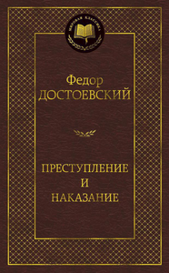

«Преступление и наказание» — социально-психологический и социально-философский роман Фёдора Михайловича Достоевского, впервые опубликованный в 1866 году.
Роман повествует о бывшем студенте Родионе Раскольникове, который решается на убийство ради проверки своей теории о «право имеющих». Это глубокое психологическое исследование человеческой души, морали и возможности искупления.
© Все права защищены